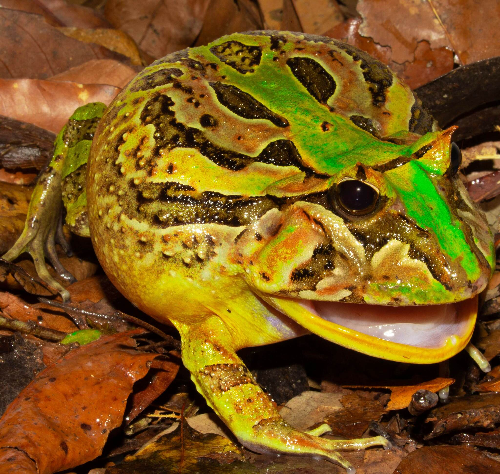
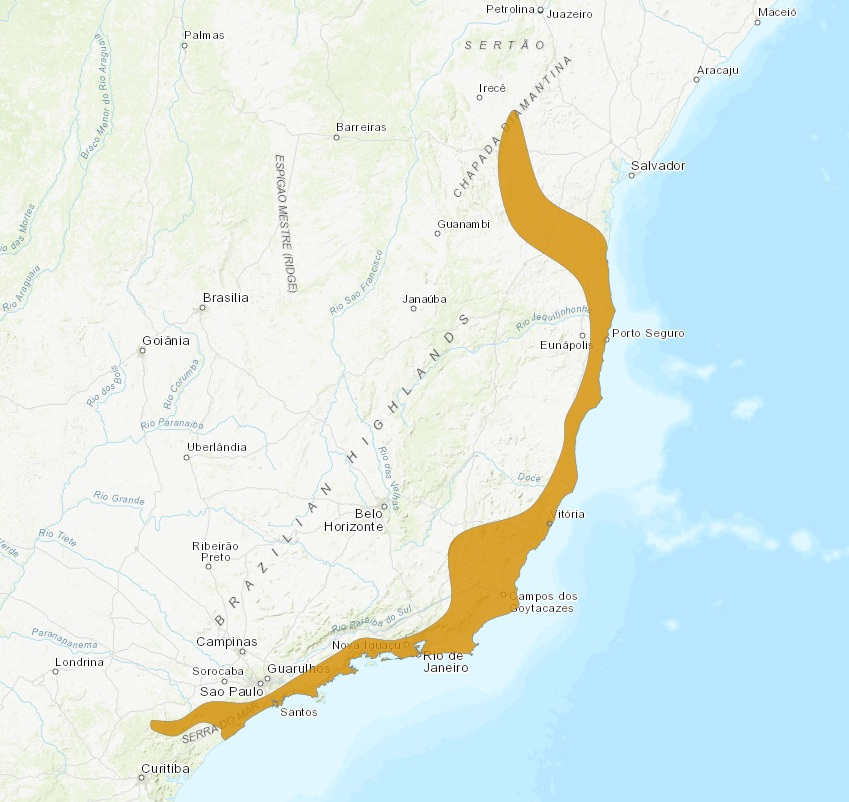

Nome popular sugerido: Sapo-untanha-brasileiro, Sapo-boi, Untanha ou Sapo-de-chifre
Sapo da espécie Ceratophrys aurita

(The IUCN Red List of Threatened Species, 2022)Esse espécie é endêmica do Brasil, com seus habitats naturais sendo florestas subtropicais ou tropicais úmidas de baixa altitude, pântanos de água doce, charcos permanentes e lagoas, porém sua ocorrência é rara, sendo endêmica da Mata Atlântica.
(DE MIRA-MENDES et al., 2022)(Contribuidores dos projetos da Wikimedia, 2014)Esta é uma espécie de grande tamanho, atingindo cerca de 23 cm de comprimento, sendo o maior de todos os sapos-untanha e o maior membro da família Ceratophryidae. É caracterizada por suas pálpebras em forma de pequenos chifres e pelo tímpano visível; a cabeça e parte do dorso são fortemente ossificadas. Possui uma enorme boca rodeada de placas semelhantes a dentículos, corpo grande e robusto e patas traseira curtas. Seu colorido chamativo é variável, com o dorso verde ou marrom-amarelado com manchas escuras, marrons ou pretas. Não possui glândulas produtoras de veneno, valendo-se de sua agressividade para afastar predadores.
(Contribuidores dos projetos da Wikimedia, 2014)Eles são carnívoros e alimentam-se de outros girinos e peixes pequenos. Quando adultos se alimentam de uma variedade de seres, desde invertebrados á outros anuros, aves, cobras, lagartos e até roedores, possuindo também hábitos de canibalismo.
(Contribuidores dos projetos da Wikimedia, 2014)(“Horned Frog Animal Facts | Ceratophrys Ornata,” n.d.)